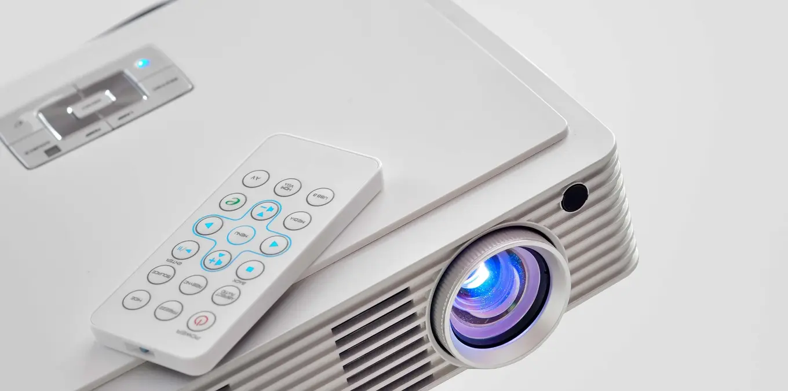
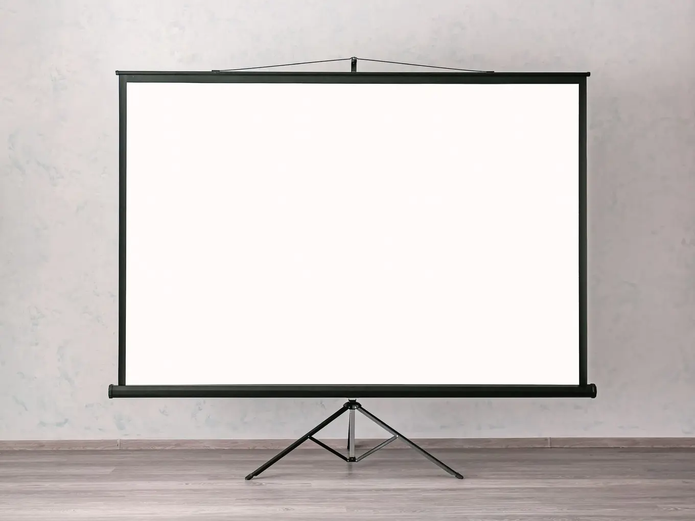
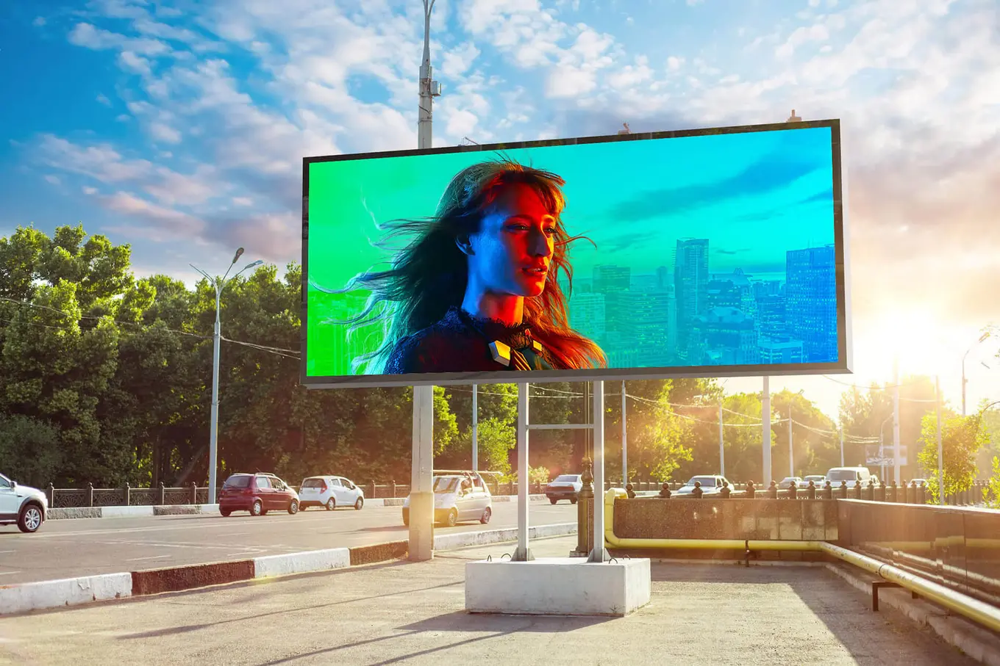
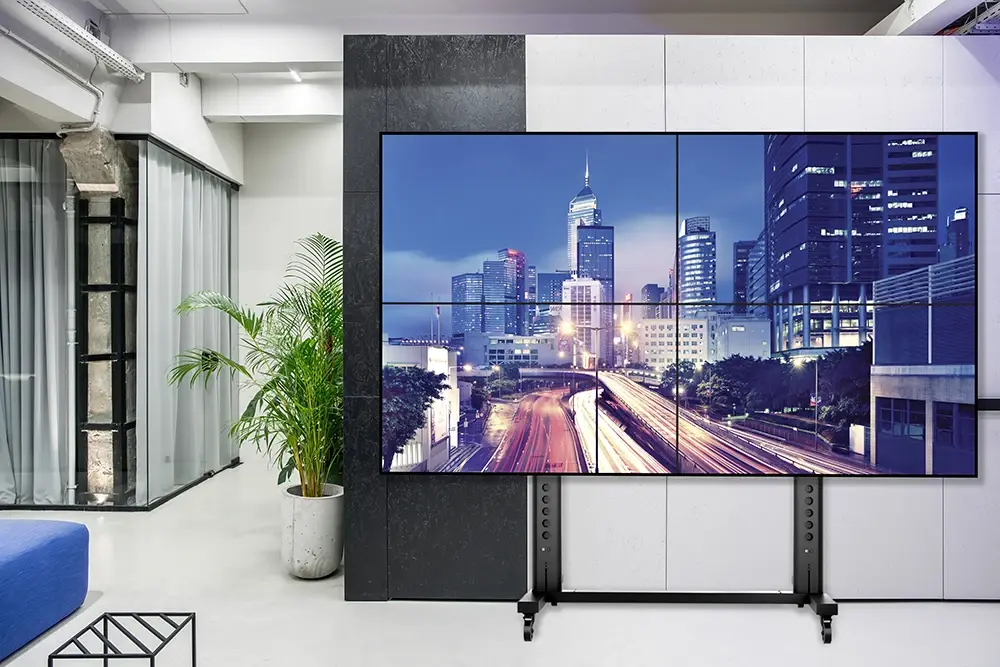
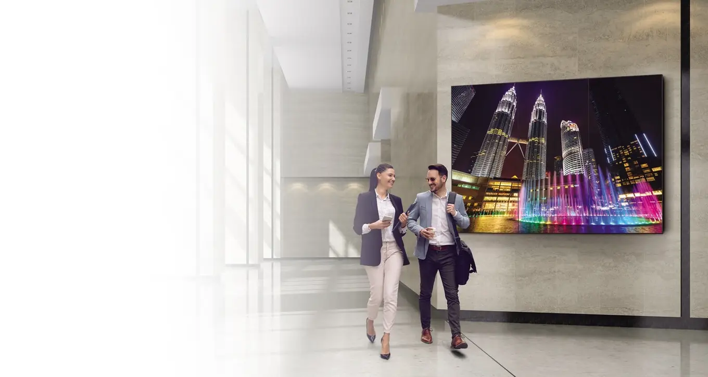

Проекторы

Проектор - оптическое устройство для демонстрации контента, которое с помощью источника света способно проецировать изображение на различные специализированные внешние поверхности, такие как - проекционный экран. Как показывает многолетняя практика нашей компании, большинство пользователей, решившись на покупку данного устройства, не обладают достаточными теоретическими знаниями для правильного выбора.
Проекционные экраны

Проекционный экран является неотъемлемым и заключительным элементом в цепочке любой проекционной системы, основное предназначение которого - это передача изображения соответствующего высочайшим стандартам качества. Проекция на любую иную поверхность способна обеспечить передачу изображения, но в отличие от проекционного экрана - никогда не создаст качественное и однородное изображение на проекционной поверхности полотна экрана.
Светодиодные экраны (LED экраны)

Светодиодный экран (LED экран) – это устройство отображения информации, в котором изображение формируется множеством полупроводниковых светодиодов, расположенных на поверхности экрана. Каждая отдельная точка экрана – это пиксель, который может содержать один или несколько светодиодов. На сегодняшний день светодиодные экраны являются одним из наиболее перспективных средств визуализации. Именно поэтому их все чаще можно встретить в качестве информационных табло, рекламных щитов или даже просто как креативный элемент декора.
Видеостены

Видеостены представляет собой одно единое целое изображение, собранное воедино из нескольких дисплеев или панелей. Количество дисплеев определяет размер, разрешение и формат изображения видеостены. Каждый дисплей является независимым источником отображения информации, синхронизация которых осуществляется с помощью специальных видеопроцессоров. В зависимости от требований к функциональности видеостены конфигурируется соответствующий процессор.
Профессиональные панели

С технической точки зрения профессиональная панель представляет собой обычный экран, состоящий из жидкокристаллической или иной матрицы, подсветки, электронных компонентов и корпуса. В свою очередь матрица – это массив жидких кристаллов или пикселей, заключенных между слоями стеклянного или полимерного пакета и объединенных в субпиксели трех базовых цветов: красного, зеленого и синего.